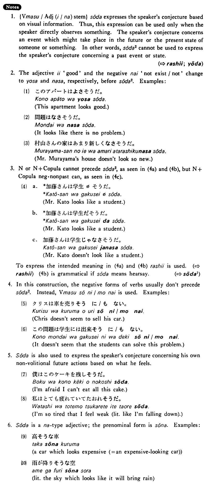

←
DoJG
→
そうだ (2)
(B. 410)
Example sentences
(ksa).
雨が降り
そうだ
・
そうです
。
It looks like it will rain.
(ksb).
あの車が高
そうだ
・
そうです
。
That car looks expensive.
(a).
この家は強い風が吹いたら倒れ
そうだ
。
It looks like this house will fall down when a strong wind blows.
(b).
あのステーキは美味し
そうだった
。
That steak looked delicious.
(c).
この辺りは静か
そうだ
。
This neighbourhood looks quiet.
Formation
(i)
Vます
そうだ
話し
そうだ
It looks like someone will talk
食べ
そうだ
It looks like someone will eat
(ii)
Adjective い/な stem
そうだ
高
そうだ
Something looks expensive
静か
そうだ
Something looks quiet
